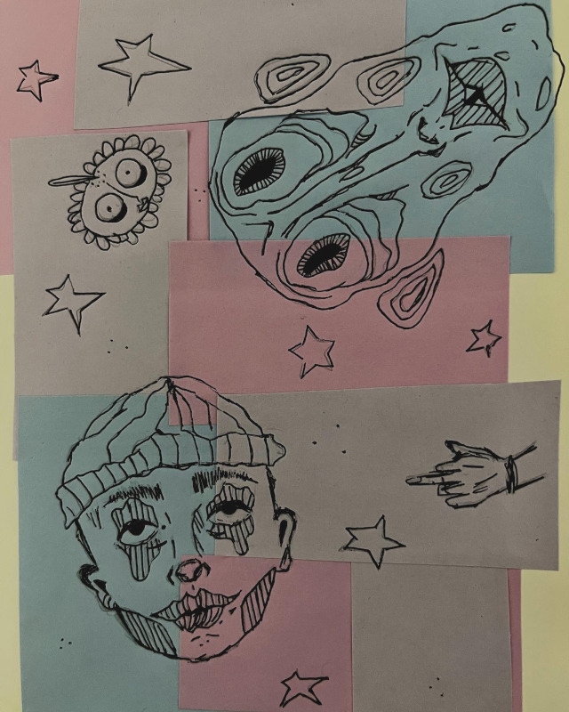

Nashla Arriaga
Soy Nashla Johanna Arriaga González una artista multidisciplinaria radicada en el Estado de México, aspiró a establecerme en el mundo del cine como directora y guionista. Como artista, mi práctica creativa se nutre de mi experiencia y de las interacciones con el mundo que me rodea. Disfruto ejemplificar mis deseos a través de una variedad de medios, desde la fotografía y el cortometraje hasta el guión, el dibujo, el collage y la pintura. En cada obra, busco constantemente mi identidad, explorando nuevos horizontes, facetas de mi misma y formas de expresión artística. Me apasiona explorar la mente humana y sus trastornos en mis proyectos, abordó mis fobias personales y el terror psicológico con un enfoque introspectivo y desafiante. Siempre estoy abierta a nuevas formas de expresión y a seguir explorando los límites de mi creatividad.